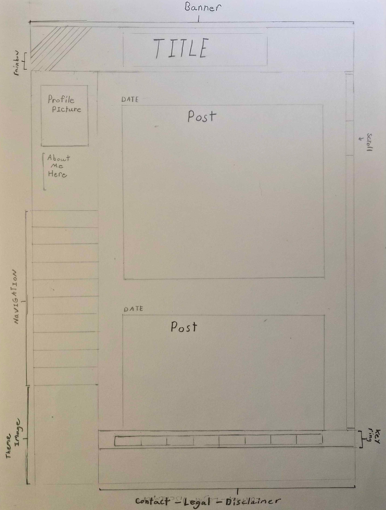
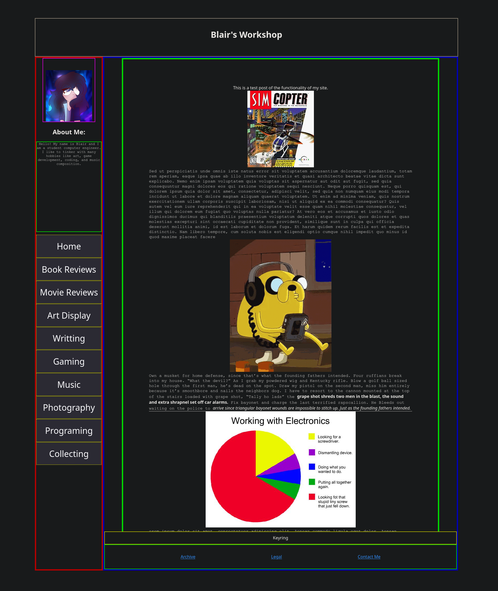
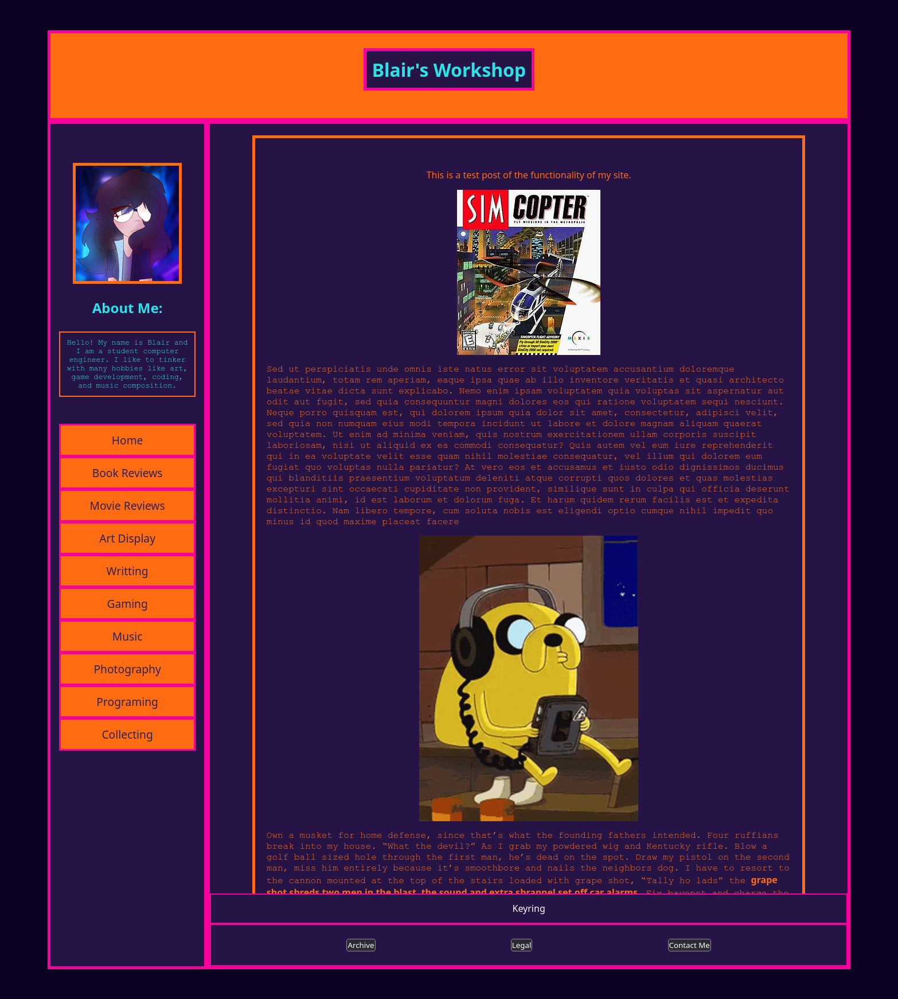

The Environment has loaded, something new forms in Cyberspace.
Building this page is my journey to better myself and to always continue doing the thing I value most, learning. When I first arrived at the idea for this blog after seeing some obscure video’s about the “Indie-Web” on YouTube I had neither the skills nor vision, just a vague amorphous concept. Knowing where the road even began was a task. I am a college student in computer engineering but that background doesn’t engender a practical skill set for web development or assist in having artistic vision.
The idea of having a space to write about the things I was interested
in and learning felt like just what I need to keep me on track and to
have something to look back on to see how far I’ve come. Somewhere to be
a sanctuary for me to grow and to build. A journal in plain view. I have
a lot of hobbies and skill I want to get better at, and there are a lot
of distractions. With the way the world is now and the internet in its’
current iteration being a monument to greed, vitriol, and self-loathing.
I feel places like Neo-Cities offer an alternative vision for what
humans can do, and what this social technology can mean.
It took time but I took advantage of some of the tools available to
me as a student for free. Like a subscription to Codedex.io, GitHub
Education, and my professors. I was able to start building a rudimentary
understanding of HTML and CSS. Chris
Coyier’s blog on Flexboxes was invaluably for building this layout.
w3schools was a great reference
for whatever I was trying to process. After more time than I care to
admit I was starting to get my tools in order. So I reached for the tool
many ideas find their foundations; pen and paper. I wouldn’t say I am
very capable yet but I needed something to go from the amorphous to the
tangible. As it turns out the process became a refreshing
meditation.

It wasn’t perfect by any means but this drawing made what came after
much easier to parse. Styling CSS is a lot simpler when you aren’t
grasping in the dark for an aesthetic. I was a Myspace kid so I wanted
some part of my page to be an injection of nostalgic reverence for that
unique time in internet history, part profile, part blog. The idea was
to have the whole site be one dynamic page where the central viewer
would change what was displayed as you navigated around the site.(I had
no idea that this would require me to learn another skill.) I also
wanted to mimic a modern feature for the infinite scroll or at least
have the viewer scroll as more and more content was added. Wrapping this
all up in the typical baubles like a guest list, music player, key ring,
and stamps. I’d give it my beloved synthwave Aesthetic.
The HTML proved to be no Herculean task and follows a very simple
procedural approach without any complex logic required. I was able to
piece together most the html for the site in one sitting. CSS was a bit
more difficult. Getting things to line up correctly and not completely
break the flow of the page. I spent many days learning the ins and outs
of getting a bunch of boxes to behave. The really challenge part was one
I didn’t even know I would encounter. With my idea of the main viewing
area changing depending on where you navigated on the site seemed
straight forward, but turned out to be quite the opposite. I didn’t know
HTML doesn’t have an easy way to include separate html files in a
central html document. I assumed it was as simple as
#include in C++, that being something I found to be fairly
mundane. I suppose that is me being naive, I don’t really know
what defines the most basic concepts of a programming language. I had to
do a lot of searching, I didn’t quite know how to put into words what I
wanted to do. I believe it was one of those intrusive google search AI
results which suggested the use of JavaScript and provided a snippet of
code.
fetch("test.html")
.then(response => response.text())
.then(data => {
document.getElementById("window").querySelector("div").innerHTML = data;
})
.catch(error => {
console.error("Error loading the file:", error)
})
code as it exist in my page at the time of writing
I had come into this project fully believing that I only needed HTML
and CSS to build the static website I wanted. Here I found myself in
need of learning yet another language. though I’m sure there is deep
magic out there that would allow this to work in other ways. I had
no idea what any of this code meant and I am unwilling to put code into
my work that I don’t understand. I spent a weekend learning the same
basic concepts as I learned in C++ transposed into JavaScript which
turned out to, intentionally, share much of the of the same syntax. This
was no trouble and the difficult stemmed with not boring myself to
death. This wasn’t enough though. Much of the content of which I was
using to learn JavaScript did not cover any part of what is shown above
in that code snippet. Besides some basic info on the DOM(Document Object
Model), which was useful for creating the buttons, I was left to search
Google and YouTube for understanding. Three video’s from two YouTube
creators help cast a light on these concepts in an intelligent and
concise way. Flagship’s JavaScript
Promise in 100 seconds, What is This in
JavaScript? in 100 seconds and, Bro Code’s Learn JavaScript
ARROW FUNCTIONS in 8 minutes got me through the steps I needed. I
could now inject HTML into my page with the press of a button! The
framework of my site’s most basic construction was in place.

Isn’t it a glorious mess? It was to me! Seeing progress, something I
work on become tangible is a feeling I get no where else and is what
keeps me going in this world. To most it’s junk, to me it’s
everything. Creation, art, learning, skill-building this is my
meaning of life. A series of clashing box frames, clickable buttons and
silly pictures is a moment of bliss.
My cute little profile pic was made by a friend of mine Cinna. It
was wonderful to be able to get some cool art made!
Okay, but now I had to give it some personalty if only to be
a place holder while I learn more about what all is possible. I know I’d
like to make my own banner image, borders and background but that stuff
takes time. For now I took a paint bucket and filled the page with some
solid colors so at least people don’t think I’m dull. Back to the CSS. I
did some searching and found a color palette that matched the kind of
idea I’m going for, from a creator on ArtStation: Aselegia. Synthwave
and cyber punk neon colors hit you like rainbow colored truck a perfect
fit for my general vibe.
I haven’t quite worked out how to appropriately deal with browser
forced dark and light scheme’s and there seems to be quite a few
different implementations of solutions. I did manage to at least get it
to show me the color’s correctly on my dark mode with
<meta name="color-scheme" content="dark light" />.
After that, applying color was fairly simple and more of a artistic task
of trying not make it look too gaudy. I struggled for a bit to figure
out how to set the base page to the color I wanted. I found that
attaching the CSS for it to <body> worked as
intended. I’m not married to the colors I choose but I think it works as
a proof of concept! With that, a picture for posterity:

She’s not perfect, but she is mine. The colors are something I will
need to work with more and once I get my drawing tablet as and Aseprite
set up I’ll have to get into the trenches creating some custom work.
Most of the pages don’t go anywhere beside a generic under construction
page. I’ll get on build some of those next. I do have many ideas! Some
are just places for separate writings beyond my generic learning
ramblings but we will see how it develops.
This project, which of course is not done, is something I’m proud to
gotten to this stage. I had to learn so many different things, more than
I even got to in this post. Color Theory, UI/UX, Website infrastructure,
HTML, CSS, JavaScript, DNS, setting up a domain name, etc. It was a
great way to get me spurred back into creativity and honing the skills I
want to eventually use in a career. I don’t have much concern if anyone
ever see this, I am just glad to make it, grow it, perfect it. I hope I
can continue to use this space as a keystone of my creative process.
There is a whole world out there I have yet to discover, I must use my
time wisely to experience and build as much as I can! I look forward to
seeing how this space and I grow.